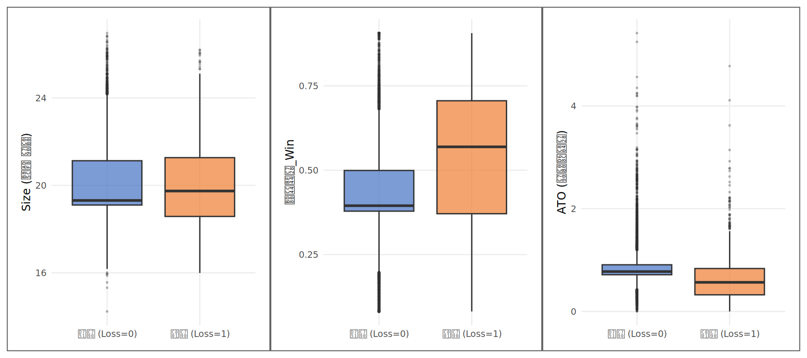
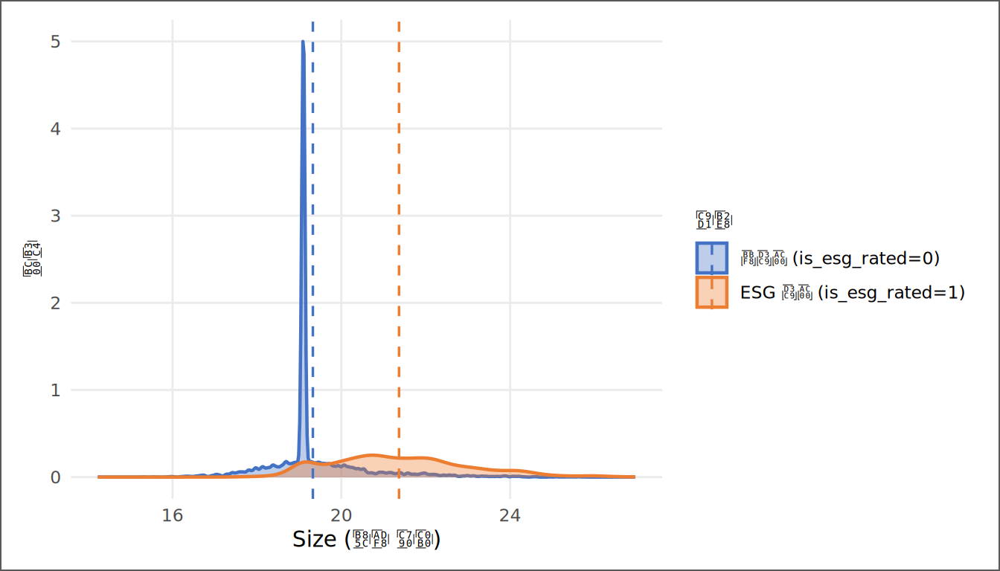

# | 키워드 | 한 줄 핵심 |
|---|---|---|
1 | 위치·산포·형태 통계 | 평균·중앙값(위치), 표준편차·IQR(산포), 왜도(형태) — 분포를 세 축으로 압축한다 |
2 | 박스플롯 (Boxplot) | 중앙값·IQR·이상점을 한눈에 — 검정 전에 눈으로 먼저 보는 감별 도구 |
3 | 독립표본 t검정 | t = (집단 평균 차이) / (표준오차) — 차이가 불확실성의 몇 배인지를 잰다 |
4 | p값의 정의 | 귀무가설이 참일 때 지금처럼 크거나 더 극단적인 결과가 나올 확률 — 인과도, 크기도 말하지 않는다 |
5 | 효과크기 — Cohen's d | 평균 차이를 공통 표준편차 단위로 나눈 표준화 통계량 — 단위를 제거해 변수 간 비교를 가능하게 한다 |
6 | 통계적 유의성 vs 실무적 크기 | p < 0.05는 '우연이 아님', Cohen's d는 '얼마나 큰가' — 둘을 함께 봐야 완전하다 |
숫자로 먼저 본다 — 기술통계와 집단 비교
“측정할 수 없으면 관리할 수 없다.” — Peter Drucker
사례로 시작하기
7장에서 김자산은 전체 분석 로드맵을 그렸다. SSOT에서 출발해 기술통계 → 집단 비교 → 상관 → 회귀 → 인과 추론으로 이어지는 계단식 구조였다. 로드맵은 완성됐다. 이제 첫 계단을 밟아야 한다.
KG Asset의 리서치팀에 새 프로젝트가 들어왔다. “상장기업 중 적자 기업과 흑자 기업은 재무 구조가 다른가? 다르다면 얼마나 다른가?” 질문은 단순해 보이지만, 대답은 쉽지 않다. 눈으로 보면 “달라 보인다”고 말할 수 있다. 하지만 얼마나 다른가, 우연일 가능성은 얼마인가, 그리고 그 차이가 실무에서 쓸 만한 크기인가 — 이 세 질문에 답하려면 숫자가 필요하다.
팀장은 자산에게 말했다. “먼저 분포부터 그려. 검정은 그다음이야.” 이 순서가 이 장의 순서다. 박스플롯으로 먼저 눈으로 보고, 기술통계 표로 수치를 확인하고, t검정으로 우연을 걸러내고, Cohen’s d로 크기를 잰다. 4단계가 모두 끝났을 때 비로소 “적자 기업은 흑자 기업보다 규모가 작고 부채가 많다”는 문장에 숫자가 붙는다.
수치를 보기 전에 하나의 프레임을 잡아두자. 적자 기업과 흑자 기업은 정말 다른 종족인가, 아니면 같은 모집단에서 뽑힌 두 표본이 우연히 달라 보이는 것인가? 이것이 이 장 전체를 관통하는 질문이다. 외모가 비슷한 두 사람을 보고 “이들이 진짜 쌍둥이인가, 다른 종족인가”를 판별하는 감별사처럼, 분석가는 두 집단의 분포를 보고 “이 차이가 구조적인 종족 차이인가, 표본 변동의 우연인가”를 판별해야 한다. 박스플롯, 기술통계, t검정, Cohen’s d — 이 장의 네 도구는 모두 그 감별을 위한 것이다.
이 장이 끝나면 자산은 알게 된다 — p값이 작다는 것과 차이가 크다는 것은 다른 말이라는 것을. 그리고 10장에서 t검정의 집단 비교가 회귀분석의 특수 사례임을 보게 된다.
핵심 키워드
학습 목표
이 장을 마치면 다음 다섯 가지를 할 수 있다.
- 위치·산포·형태 통계를 계산하고 재무 데이터의 맥락에서 해석할 수 있다.
- 박스플롯으로 집단 분포를 시각화하고 중앙값·IQR·이상점을 읽을 수 있다.
- 독립표본 t검정의 t값 공식을 설명하고, p값을 정확히 정의할 수 있다.
- Cohen’s d로 효과크기를 산출하고, 통계적 유의성과 실무적 크기를 구분할 수 있다.
- AI와 협업해 집단 비교 분석을 설계하고 결과를 한 쪽 보고서로 번역할 수 있다.
D→I→K→W 4단계 파이프라인
| 단계 | 이 장에서의 모습 |
|---|---|
| 데이터 (D) | 기업-연도 패널 — ROA, Loss_Dummy, is_esg_rated, Size, 부채비율_Win, ATO |
| 정보 (I) | 집단별 평균·중앙값·SD·IQR — “적자 기업은 규모가 작고 부채가 많다” |
| 지식 (K) | t검정 + Cohen’s d — “이 차이가 표본 변동의 우연인가, 실무적으로 의미 있는 크기인가” |
| 지혜 (W) | 투자·운용 판단 — “이 구조적 차이를 포트폴리오 스크리닝 기준으로 써도 되는가” |
데이터 출처와 수집
데이터 | 출처 | 핵심 변수 | 이 장의 역할 |
|---|---|---|---|
재무제표 패널 | DataGuide 5.0 (KOSPI·KOSDAQ 상장기업) | 자산총계, 부채총계, 당기순이익 | 집단 분리 기준(Loss_Dummy)과 비교 대상(Size·부채비율·ATO)의 원천 |
ESG 등급 | KCGS 등급 (DataGuide 제공) | ESG등급, is_esg_rated(평가 여부 더미) | ESG 집단 비교의 설명변수 |
파생 변수 | 3~5장에서 구축한 SSOT 파이프라인 | ROA, Size(log 자산), 부채비율_Win, Loss_Dummy | 통제변수와 정제된 분석 표본 |
분석 표본은 3장에서 구축하고 4~5장에서 정제한 SSOT 데이터셋이다. 전 장들과 같은 데이터를 쓰는 이유는 단순하다 — 분석 단계마다 데이터가 바뀌면, 결과 차이가 방법의 차이인지 데이터의 차이인지 구분할 수 없기 때문이다.
기술통계 기초 — 위치·산포·형태
기술통계는 데이터를 한눈에 파악하는 압축이다. 분포를 세 축으로 요약한다 — 위치(평균·중앙값)는 분포의 중심을 잡고, 산포(표준편차·IQR)는 퍼짐을 재고, 형태(왜도)는 분포가 좌우 어느 쪽으로 기울었는지를 말한다. 재무 데이터에서 이 세 축이 모두 필요한 이유는 극단값이 흔하기 때문이다 — ROA가 -500%인 기업 하나가 평균을 끌어내려도 중앙값은 꿈쩍하지 않는다. 수식으로 정의하면 다음과 같다.
평균 = (x1 + x2 + ... + xn) / n
중앙값 = 정렬 후 n이 홀수면 중간값, 짝수면 두 중간값의 평균
표준편차 = sqrt( Sum((xi - xbar)^2) / (n-1) )
IQR = Q3 - Q1 (상위 25% 지점 - 하위 25% 지점)위치 통계 중 평균과 중앙값은 같은 대상을 재지만 다른 질문에 답한다. 평균은 “전부 합해서 n등분하면”을 묻고, 중앙값은 “정중앙에 있는 기업은”을 묻는다. 재무 데이터처럼 극단값이 흔한 영역에서는 중앙값이 더 안정적인 대표값이다 — 한 기업의 부채비율이 1000%면 평균은 크게 흔들리지만 중앙값은 꿈쩍하지 않는다. 형태(왜도)는 박스플롯의 수염 길이로 직관적으로 읽힌다. 오른쪽 수염이 길면 양(+)의 왜도이고, 이때 평균은 중앙값보다 크다 — 극소수 고레버리지 기업에 끌려 올라간 것이다.
데이터 적재와 표본 구성
# ① SSOT 데이터 적재 — _helpers.R의 read_book_csv 경유
ssot_raw <- read_book_csv(ssot_path)
# ② 분석 변수만 명시 선택 (매출액 중복열 회피를 위해 transmute 사용)
desc_df <- ssot_raw |>
dplyr::transmute(
코드, 코드명, 회계연도,
Loss_Dummy, is_esg_rated,
Size, 부채비율_Win, ATO, ROA, Female_Ratio
) |>
tidyr::drop_na(Loss_Dummy, Size, 부채비율_Win, ATO, is_esg_rated)코드 읽기. ①의 read_book_csv()는 _helpers.R에서 온 래퍼 함수로, CSV를 읽으면서 열 이름 충돌을 자동으로 처리한다. ②에서 select() 대신 transmute()를 쓰는 이유는 하나다 — 원본 데이터에 매출액(천원) 계열 열이 두 개 존재할 수 있는데(...8, ...12 접미사 버전), transmute()로 필요한 변수만 명시적으로 고르면 이 중복 문제를 원천 차단한다. drop_na()는 분석 변수에 결측이 하나라도 있는 행을 제거해, 이후 모든 분석이 동일한 표본 위에서 이루어지게 한다.
분석 표본은 2010년부터 2024년까지 기업 667개사의 기업-연도 관측치 10,000건이다. 이 가운데 적자 관측치(Loss_Dummy = 1)의 비중은 14.5%, ESG 평가 관측치의 비중은 40.5%다.
Loss_Dummy를 쓰기 전에 측정의 한계를 짚어두자. 이 더미는 “당기순이익 < 0인 연도”를 기계적으로 적자로 분류한다. 일시적 자산 평가손실로 그 해만 순이익이 마이너스인 본질적 흑자 기업도, 매년 영업현금이 빠져나가는 구조적 부실 기업도 모두 ’1’로 묶인다. 더미는 편리하지만 뭉뚱그린다. 이 한계를 가지고 결과를 읽는 것이 솔직한 분석이다.
적자 기업은 정말 다른 종족인가 — Loss_Dummy 집단 해부
박스플롯으로 먼저 본다
# ① 집단 라벨 부여
plot_df <- desc_df |>
dplyr::mutate(
집단 = factor(Loss_Dummy, levels = c(0, 1),
labels = c("흑자 (Loss=0)", "적자 (Loss=1)"))
)
# ② 변수별 박스플롯 — 같은 구조 세 번 반복
p_size <- ggplot2::ggplot(plot_df, ggplot2::aes(x = 집단, y = Size, fill = 집단)) +
ggplot2::geom_boxplot(alpha = 0.7, outlier.size = 0.4, outlier.alpha = 0.25) +
ggplot2::scale_fill_manual(values = c("#4472C4", "#ED7D31"), guide = "none") +
ggplot2::labs(x = NULL, y = "Size (로그 자산)") + theme_book(9)
p_lev <- ggplot2::ggplot(plot_df, ggplot2::aes(x = 집단, y = 부채비율_Win, fill = 집단)) +
ggplot2::geom_boxplot(alpha = 0.7, outlier.size = 0.4, outlier.alpha = 0.25) +
ggplot2::scale_fill_manual(values = c("#4472C4", "#ED7D31"), guide = "none") +
ggplot2::labs(x = NULL, y = "부채비율_Win") + theme_book(9)
p_ato <- ggplot2::ggplot(plot_df, ggplot2::aes(x = 집단, y = ATO, fill = 집단)) +
ggplot2::geom_boxplot(alpha = 0.7, outlier.size = 0.4, outlier.alpha = 0.25) +
ggplot2::scale_fill_manual(values = c("#4472C4", "#ED7D31"), guide = "none") +
ggplot2::labs(x = NULL, y = "ATO (자산회전율)") + theme_book(9)
# ③ 세 그림을 가로로 이어 붙인다 (patchwork)
p_size + p_lev + p_ato
코드 읽기. ①에서 factor(Loss_Dummy, levels=c(0,1), labels=c(...))가 숫자 0·1을 “흑자 / 적자” 라벨로 바꾼다 — R이 그래프 축에서 의미 있는 이름을 보여주게 만들어 준다. ②에서 세 ggplot() 블록은 구조가 완전히 같고 y = ... 하나만 다르다. geom_boxplot()이 박스플롯을 그리고, scale_fill_manual()로 두 집단에 각각 파란색(흑자)·주황색(적자)을 입힌다. guide = "none"은 범례를 숨긴다 — 축 라벨 자체가 이미 집단을 설명하므로. ③의 p_size + p_lev + p_ato는 patchwork 패키지의 문법으로, +가 그림을 가로로 이어 붙인다.
박스플롯을 읽는 법 하나. 박스의 가운데 선(중앙값) 위치가 두 집단에서 얼마나 떨어져 있는가 — 그것이 눈으로 보는 집단 차이다. 상자의 높이(IQR) 가 흩어짐을 보여준다. 두 박스가 겹치지 않으면 차이가 뚜렷하고, 크게 겹치면 검정이 불리하다. 그림을 보고 나서 숫자로 확인하는 순서가 맞다.
기술통계 표
# ① 집단별 기술통계 산출 함수 (재사용 가능한 내부 도우미)
gstat <- function(x) list(
평균 = round(mean(x, na.rm = TRUE), 3),
중앙값 = round(median(x, na.rm = TRUE), 3),
SD = round(sd(x, na.rm = TRUE), 3),
IQR = round(IQR(x, na.rm = TRUE), 3)
)
# ② Loss_Dummy 집단별, 변수별 통계량을 행으로 쌓는다
make_desc_rows <- function(varname, label) {
v0 <- desc_df[[varname]][desc_df$Loss_Dummy == 0]
v1 <- desc_df[[varname]][desc_df$Loss_Dummy == 1]
s0 <- gstat(v0); s1 <- gstat(v1)
tibble::tibble(
변수 = label,
통계량 = c("평균", "중앙값", "SD", "IQR"),
`흑자 (Loss=0)` = unlist(s0),
`적자 (Loss=1)` = unlist(s1),
차이 = round(unlist(s1) - unlist(s0), 3)
)
}
desc_tbl <- dplyr::bind_rows(
make_desc_rows("Size", "Size (로그 자산)"),
make_desc_rows("부채비율_Win", "부채비율_Win"),
make_desc_rows("ATO", "ATO (자산회전율)")
)코드 읽기. ①의 gstat()는 벡터 하나를 받아 네 가지 통계량을 리스트로 돌려주는 내부 도우미 함수다 — function(x) list(...) 구조는 “x를 받아 이름이 붙은 리스트를 반환하라”는 뜻이다. ②의 make_desc_rows()는 변수 이름과 표시 이름을 받아 두 집단의 통계량을 비교하는 행 묶음을 만든다. desc_df[[varname]]은 “데이터프레임에서 varname이라는 이름의 열을 꺼내라”는 R의 이중 대괄호 문법이다. dplyr::bind_rows()가 세 변수의 행 묶음을 세로로 이어 붙여 최종 표를 완성한다.
변수 | 통계량 | 흑자 (Loss=0) | 적자 (Loss=1) | 차이 |
|---|---|---|---|---|
Size (로그 자산) | 평균 | 20.174 | 20.024 | -0.150 |
Size (로그 자산) | 중앙값 | 19.311 | 19.742 | 0.431 |
Size (로그 자산) | SD | 1.620 | 1.943 | 0.323 |
Size (로그 자산) | IQR | 2.027 | 2.690 | 0.663 |
부채비율_Win | 평균 | 0.420 | 0.539 | 0.119 |
부채비율_Win | 중앙값 | 0.395 | 0.569 | 0.174 |
부채비율_Win | SD | 0.153 | 0.225 | 0.072 |
부채비율_Win | IQR | 0.121 | 0.335 | 0.214 |
ATO (자산회전율) | 평균 | 0.853 | 0.642 | -0.211 |
ATO (자산회전율) | 중앙값 | 0.777 | 0.567 | -0.210 |
ATO (자산회전율) | SD | 0.404 | 0.464 | 0.060 |
ATO (자산회전율) | IQR | 0.193 | 0.512 | 0.319 |
표 8.3이 말하는 것을 읽자. 규모(Size)에서 적자 기업의 중앙값은 흑자 기업보다 0.432만큼 크다. 부채비율_Win은 0.174만큼 높다. ATO는 0.210만큼 낮다. 세 변수 모두에서 차이의 방향이 이론과 일치한다 — 적자 기업은 규모가 작고, 부채가 많으며, 자산을 덜 효율적으로 돌린다. 그러나 이것은 눈에 보이는 표면이다. 이 차이가 표본 변동의 우연인지, 모집단에 실재하는 구조적 차이인지는 아직 판정되지 않았다.
차이를 숫자로 — t검정의 직관과 수식
직관: 분자와 분모의 경쟁
t검정의 직관은 분수 하나다.
t = (xbar1 - xbar2) / SE(xbar1 - xbar2)
xbar1, xbar2 : 두 집단의 표본 평균
SE : 그 차이의 표준오차 = sqrt( s1^2/n1 + s2^2/n2 )분자는 관측된 차이고, 분모는 표본 크기와 분산이 만들어내는 불확실성이다. t값은 “차이가 불확실성의 몇 배인가”를 잰다. 같은 차이라도 표본이 크면 분모가 줄어 t값이 커진다. 이것이 “표본이 클수록 작은 차이도 유의해진다”는 현상의 수학적 근거다.
p값의 정확한 정의를 한 번 더 새겨두자. p값은 귀무가설(두 집단의 모평균이 같다)이 참일 때, 지금처럼 크거나 더 극단적인 차이가 표본에서 관측될 확률이다. p값은 인과를 말하지 않고, 차이의 크기를 말하지 않으며, 귀무가설이 틀렸을 확률도 아니다. 오직 “이 정도 차이가 우연일 확률”만 말한다. 이 p값은 다른 변수가 통제되지 않은 상태의 한계를 갖는다 — 10장에서 그 한계가 무엇을 의미하는지 본다.
실험: ESG 평가 기업과 미평가 기업의 규모 차이 — 3장 콜백
3장에서 ESG 평가 기업이 대형사에 편향되어 있음을 질적으로 확인했다. 이 장에서는 그 차이를 공식 검정으로 정량화하고, 효과크기까지 잰다. 이것이 3장의 선택편향을 “이미 알고 있는 사실”에서 “수치로 확인된 사실”로 격상시키는 작업이다.
# ① is_esg_rated 집단별 Size의 독립표본 t검정
t_res <- t.test(Size ~ is_esg_rated, data = desc_df)
# ② Cohen's d 계산에 필요한 집단별 요약통계 직접 산출
esg0 <- desc_df$Size[desc_df$is_esg_rated == 0]
esg1 <- desc_df$Size[desc_df$is_esg_rated == 1]
n0 <- length(esg0); n1 <- length(esg1)
m0 <- mean(esg0); m1 <- mean(esg1)
sd0 <- sd(esg0); sd1 <- sd(esg1)
# ③ Cohen's d = (평가군 평균 − 미평가군 평균) / 풀링된 표준편차
pooled_sd <- sqrt(((n0 - 1) * sd0^2 + (n1 - 1) * sd1^2) / (n0 + n1 - 2))
cohen_d <- (m1 - m0) / pooled_sd코드 읽기. ①의 t.test(Size ~ is_esg_rated, data = desc_df)는 “Size를 is_esg_rated 집단으로 나눠 t검정하라”는 명령이다. 물결표 ~로 측정 변수와 집단 변수를 구분하는 방식은 10장의 회귀 공식 ROA ~ ESG평가와 정확히 같다 — 사실 단순회귀의 더미 기울기와 t검정의 평균 차이는 수학적으로 동치다(정리 섹션 참조). ②에서 desc_df$Size[조건]은 “Size 열에서 조건을 만족하는 값만 골라라”는 인덱싱 문법이다. ③의 풀링된 표준편차는 두 집단의 분산을 표본 크기로 가중한 공통 척도이며, Cohen’s d는 이 공통 단위로 평균 차이를 표준화한다 — 단위가 다른 변수들의 효과크기를 서로 비교할 수 있는 이유가 여기 있다.
항목 | 값 |
|---|---|
미평가 (is_esg_rated = 0) | n = 5,953, 평균 = 19.326, SD = 1.091 |
ESG 평가 (is_esg_rated = 1) | n = 4,047, 평균 = 21.368, SD = 1.634 |
t값 | -69.654 |
자유도 (df) | 6,467 |
p값 | < 0.001 |
95% 신뢰구간 (평균 차이) | [-2.099, -1.985] |
Cohen's d | 1.527 |
효과크기 해석 | 큼 |
# ① 집단 라벨을 붙여 밀도 그래프를 그린다
ggplot2::ggplot(
desc_df |> dplyr::mutate(
집단 = factor(is_esg_rated, levels = c(0, 1),
labels = c("미평가 (is_esg_rated=0)", "ESG 평가 (is_esg_rated=1)"))
),
ggplot2::aes(x = Size, fill = 집단, color = 집단)
) +
ggplot2::geom_density(alpha = 0.35, linewidth = 0.8) + # ② 반투명 밀도곡선
ggplot2::geom_vline(
data = data.frame(집단 = c("미평가 (is_esg_rated=0)", "ESG 평가 (is_esg_rated=1)"),
m = c(m0, m1)),
ggplot2::aes(xintercept = m, color = 집단),
linetype = "dashed", linewidth = 0.6
) + # ③ 평균 위치 수직선
ggplot2::scale_fill_manual(values = c("#4472C4", "#ED7D31")) +
ggplot2::scale_color_manual(values = c("#4472C4", "#ED7D31")) +
ggplot2::labs(x = "Size (로그 자산)", y = "밀도",
fill = "집단", color = "집단") +
theme_book(11)
코드 읽기. ①에서 factor()로 집단 라벨을 먼저 붙이고, 그 라벨을 aes(fill = 집단, color = 집단)이 색깔 구분에 쓴다 — 라벨과 색깔이 자동으로 연결된다. ②의 geom_density(alpha = 0.35)는 커널 밀도 추정 곡선을 반투명하게 그려서, 두 곡선이 겹치는 부분도 볼 수 있게 한다. ③의 geom_vline()은 각 집단의 평균 위치에 점선 수직선을 그어준다 — 두 수직선이 얼마나 떨어져 있는가가 곧 m1 - m0, 즉 평균 차이다.
결과를 읽자. ESG 평가 기업의 평균 Size는 미평가 기업보다 2.042만큼 크다. 이 차이는 1% 수준에서 통계적으로 유의하다. 효과크기는 Cohen’s d = 1.527로 큼에 해당한다.
3장 콜백으로 이 결과를 해석하면 이렇다. ESG 평가기관은 자료 접근성이 높은 대형사부터 평가하기 때문에, 규모와 평가 여부는 처음부터 묶여 있다 — 이것이 3장의 선택편향 논의였다. 이 t검정은 그 편향을 수치로 확인한 것이다. 유의하지만 당연한 차이다. 그리고 이 차이가 당연하다는 사실이 바로 10장의 핵심 질문을 정당화한다 — “ESG 평가와 수익성의 관계를 볼 때 규모를 통제하지 않으면 무슨 일이 벌어지는가?”
유의함과 중요함의 거리 — 효과크기와 Cohen’s d
통계적 유의성과 실무적 중요성은 다른 개념이다. 표본이 수만 건인 재무 패널에서는 작은 차이도 p < 0.001이 된다. p값이 “귀무가설이 참일 때 현재 또는 더 극단적인 통계량이 관측될 가능성이 낮다”고 말할 때, 그 차이가 포트폴리오를 재설계할 만큼 큰지는 별도의 질문이다. 그 질문에 답하는 것이 효과크기(effect size) 다.
재무 데이터 분석에서 방향에 대한 강한 사전 이론이 없으면 양측 검정이 표준이다 — 단측 검정은 유의성을 인위적으로 키우는 통로가 될 수 있다.
Cohen’s d는 가장 직관적인 효과크기 지표다. 두 집단의 평균 차이를 공통 표준편차 단위로 나눈 값으로, 단위가 없어 변수 간 비교가 가능하다. 여기서 용어를 하나 정리해두자. 효과크기(effect size)는 Cohen’s d처럼 표준화된 통계량을 가리킨다. 이와 구별해야 할 개념이 경제적 크기(economic magnitude)다 — “Size 중앙값이 0.4 차이난다”, “ROA가 2%p 다르다”처럼 실무 단위로 표현한 차이를 뜻한다. 둘 다 중요하지만 말하는 것이 다르다. 제이콥 코헨(Jacob Cohen)이 제안한 효과크기 해석 기준은 다음과 같다.
Cohen's d의 절댓값 | 해석 | 현실 기준 |
|---|---|---|
< 0.2 | 무시할 만한 수준 — 두 집단은 사실상 같은 분포다 | 수만 건 표본에서도 유의하지 않을 수 있음 |
0.2 이상 0.5 미만 | 작은 효과 — 차이가 있으나 겹침이 크다 | 유의하더라도 의사결정 기준으로 삼기에는 약할 수 있음 |
0.5 이상 0.8 미만 | 중간 효과 — 실무적으로 감지 가능한 차이 | 실무 판단의 참고 기준으로 충분 |
0.8 이상 | 큰 효과 — 두 분포가 상당히 분리된다 | 강한 구조적 차이 — 포트폴리오 구성에 반영 가능 |
감별사 비유로 돌아오자. p값은 감별사가 “두 영상이 다르다”고 판정하는 기준이고, Cohen’s d는 그 차이가 “미세한 차이인가, 육안으로도 보이는 차이인가”를 측정한다. 수만 건 표본에서 p < 0.001이 나왔다면, 그 결과를 보고서에 쓰기 전에 반드시 물어야 한다 — “d는 얼마인가?”
한 가지만 더 기억하자. Cohen의 기준값은 사회과학 평균을 기반으로 한 참고치이지 절대 법칙이 아니다. 재무 패널처럼 노이즈가 큰 데이터에서 d = 0.3도 실질적으로 중요한 차이일 수 있고, 심리학 실험실처럼 통제된 환경에서 d = 0.5가 작을 수 있다. 기준은 출발점이지 종착점이 아니다.
분석가의 번역
계수와 검정 결과를 읽는 데서 멈추면 분석가고, 이 표를 쓸 수 있으면 보고자다.
숫자 | 통계적 해석 | 실무 번역 |
|---|---|---|
적자군 Size 중앙값 19.742 vs 흑자군 19.311 | 적자 기업의 중앙값이 더 크다 | 적자 기업이 더 큰 종족 — 대형사의 일시적 손실 여부 점검 필요 |
t = -69.654 | 1% 수준에서 통계적으로 유의하다 | 표본 변동으로 설명되지 않는다 — 그러나 이것이 인과의 증거는 아니다 |
p = < 0.001 | 귀무가설 참일 때 이 차이 이상이 나올 확률 | 최소 기준 통과 — 그 다음은 d값이 결정한다 |
Cohen's d = 1.527 | 효과크기 큼 | 중간 효과 이상 — 포트폴리오 스크리닝에서 실질적으로 감지되는 차이 |
남은 한계 | 더미의 뭉뚱그림, 연도·산업 미통제 | 적자의 원인 구조(일시적 vs 구조적)는 이 더미로 구분할 수 없다 |
완성 예시 — 검증 메모 전문
KG Asset 내부 검증 메모
제목. is_esg_rated 집단별 Size 차이 — 3장 선택편향의 정량적 확인
결론. ESG 평가 기업의 자산 규모는 미평가 기업보다 통계적·실무적으로 크게 크다(d = 1.527). 이 차이는 ESG 활동의 결과가 아니라 선택의 구조에서 비롯된다 — 평가기관이 대형사부터 평가하기 때문이다.
수치. 미평가 기업의 평균 로그 자산은 19.326, ESG 평가 기업은 21.368로, 차이는 2.042이다. 독립표본 t검정 결과 t = -69.654, p < 0.001. Cohen’s d = 1.527(큼).
해석. 3장에서 선택편향으로 지적한 현상이 수치로 확인되었다. ESG 평가기관은 자료 접근성이 높은 대형사부터 평가하므로, ESG 평가 여부와 기업 규모는 처음부터 묶여 있다. 10장의 회귀 분석에서 이 규모 차이를 통제하지 않으면, ESG 평가 계수에는 규모의 그림자가 함께 실린다.
한계. 이 분석은 규모 차이의 존재를 확인할 뿐, 인과 구조를 확정하지 않는다. 산업, 연도, 업력 등 미통제 요인이 남아 있다.
이 메모가 이 장의 종착지다. 숫자를 읽는 사람은 많다. 숫자를 이런 글로 바꿀 수 있는 사람이 분석가다.
R로 직접 해보기
| IPO | 내용 |
|---|---|
| Input | In_class_R/11주차/Derived_SSOT_Dataset.csv (3~5장 산출 SSOT) |
| Process | 데이터 적재 → 집단별 기술통계 → 박스플롯 → t검정 + Cohen’s d → 분석가 번역 메모 |
| Output | Output/ch08_desc_by_loss.csv, Output/ch08_ttest_esg_size.csv, 박스플롯·분포곡선 그림 |
| Report | “ESG 평가 편향 확인 메모” 1쪽 (표 8.6 양식) |
난이도 | 분석 아이디어 | 확인 포인트 |
|---|---|---|
초심자 | Loss_Dummy 집단별 ROA 기술통계 표를 만들고 박스플롯과 수치가 일치하는지 확인한다 | Loss=1 집단의 ROA가 음수인가 — 정의상 당연하다. 그렇다면 이 비교는 무엇을 추가로 알려주는가 |
초심자 | is_esg_rated 집단별 부채비율_Win t검정을 반복해 3장 선택편향의 두 번째 차원을 확인한다 | 부채비율 차이의 Cohen's d가 Size 차이보다 큰가 작은가 — 어느 차원의 선택편향이 더 강한가 |
초심자 | Female_Ratio를 Loss_Dummy 집단별로 비교하고 '여성 고용 비율이 높은 기업이 흑자인가'를 검정한다 | p값과 효과크기가 모두 유의한가 — 유의하지 않다면 현재 표본과 검정력에서는 차이를 확인하지 못했음을 의미한다 |
고급자 | Loss_Dummy = 1 기업 중 연속 2년 이상 적자인 관측치만 골라 '구조적 부실군'을 재정의하고 차이가 커지는지 확인한다 | 재정의된 집단의 t값과 d값이 본문 결과보다 큰가 — 더미의 뭉뚱그림 효과를 측정하는 실험이다 |
고급자 | 상장상태(정상 vs 상장폐지)를 세 번째 집단 변수로 추가해 생존상태×손실 2×2 기술통계 표를 만든다 | 2×2 표에서 표본이 충분한 셀이 어디인가 — 표본 크기가 작은 셀의 결론은 보수적으로 해석해야 한다 |
AI 협업 프로토콜 — 감별을 대신 맡기지 말고, 가설 목록을 늘려라
이 장의 핵심 작업은 두 단계다 — 집단 차이를 발견하고, 그 차이를 실무 언어로 번역한다. AI는 두 단계 모두에 유용하지만, 쓰임새가 다르다.
수준 | 이 장의 행동 |
|---|---|
L1 (인식) | AI에게 '두 집단의 기술통계를 해석해줘'라고 결과표를 통째로 넘긴다 |
L2 (적용) | 변수 정의와 집단 분류 기준을 명시하고 t검정 코드의 오류 진단을 맡긴다 |
L3 (분석) | AI에게 '유의하지만 효과크기가 작은 이 결과를 CIO에게 설명하는 두 가지 방식을 제시하라'고 요구한 뒤, 두 방식의 차이를 직접 평가한다 |
L4 (창의) | AI와 함께 효과크기 기준을 이 데이터 도메인에 맞게 재보정하는 논거를 설계하고, 그 보정 기준을 보고서 메모에 명시한다 |
AI 협업 워크플로는 두 개의 프롬프트로 충분하다.
[프롬프트 1 — 분석 전: 비교 가설 목록 생성] “Loss_Dummy(당기순이익 기준 적자 여부)와 재무 변수의 집단 비교 분석을 준비하고 있다. Size, 부채비율_Win, ATO 외에 두 집단이 다를 것으로 예상되는 변수 다섯 개를 이론 근거와 함께 제시하고, 각각의 차이 방향(+/-) 을 예측해줘.”
[프롬프트 2 — 분석 후: 결과 번역] “다음 t검정 결과를 보고(표 붙여넣기). (1) 통계적 유의성 (2) 효과크기의 실무적 의미 (3) 이 차이를 포트폴리오 스크리닝에 어떻게 반영할지 세 줄로 평가해줘. ‘중요하다’ ‘의미 있다’ 같은 결론 없는 표현은 제거하고 구체적인 수치와 판단 기준으로 대체해줘.”
| AI에게 맡겨도 되는 일 | 사람이 반드시 판단해야 하는 일 |
|---|---|
| 비교 가설 브레인스토밍 | Loss_Dummy 측정 한계의 현실적 판단 |
| 코드 오류 메시지 진단 | 효과크기 기준의 도메인 적용 타당성 |
| 결과표 문장화 초안 | 차이를 투자 전략 변경의 근거로 쓸지 여부 |
| 대안 집단 정의 제안 | 최종 보고서의 결론 문장과 책임 |
섹션 | 포함 내용 |
|---|---|
결론 (한 줄) | 두 집단이 다른가, 그 차이의 실무적 의미는 무엇인가 — 한 문장 |
집단 정의 | Loss_Dummy / is_esg_rated 등 집단 변수의 측정 방식과 한계 |
기술통계 | 변수별 평균·중앙값·SD — 박스플롯과 수치가 일치하는지 확인 |
검정 결과 | t값·p값·신뢰구간 — p값의 정확한 정의와 함께 제시 |
효과크기 | Cohen's d와 해석 기준 — '유의하지만 작은 효과'를 별도 문장으로 명시 |
한계와 권고 | 뭉뚱그림 더미의 한계, 미통제 변수 목록, 권고 후속 분석 |
정리, 함정, 다음 장
이 장의 결론을 한 문장으로 줄이면 이렇다. 차이를 주장하려면 세 가지가 함께 있어야 한다 — 눈에 보이는 분포 차이(그림), 우연이 아님의 판정(t검정), 그 차이의 크기(Cohen’s d). 셋 중 하나라도 빠지면 감별은 반쪽이다.
그리고 이 장에서 확인한 것을 10장과 연결해 닫아두자. is_esg_rated를 더미 변수로 쓴 단순회귀 Size ~ is_esg_rated의 기울기 계수 β1은 t검정의 평균 차이 m1 - m0와 수학적으로 동치다 — 회귀의 t값도, 검정의 t값도 같은 분수를 계산한다. 집단 비교는 더미 회귀의 특수 사례이고, 10장은 그 더미에 통제변수를 쌓는 일이다. 8장의 평균 차이가 10장의 출발점이 되는 이유가 여기 있다.
많은 분석가들이 빠지는 함정 세 가지를 기억하라.
- 분포를 보지 않고 평균만 비교한다. 두 집단의 평균이 같아도 분산이 크게 다를 수 있다. 평균만 보면 두 분포가 완전히 다른 모양인데 “같다”고 결론 내린다. 박스플롯이 먼저다.
- p < 0.05를 ’중요하다’와 동일시한다. 수만 건 표본에서 1%p 차이도 p < 0.001이 나온다. p값은 “우연이 아님”을 판정할 뿐이다. “얼마나 중요한가”는 Cohen’s d의 몫이다.
- 다중 비교를 남발한다. 10개 변수에 각각 t검정을 돌리면, 모두 귀무가설이 참이어도 우연히 1개 정도는 p < 0.05가 나온다(α = 5%로 검정 10번이면 기댓값이 0.5개). 여러 변수를 동시에 검정할 때는 유의한 것만 선별 보고하지 말고, 검정 횟수를 함께 명시하라.
점검 항목 | 통과 기준 |
|---|---|
집단별 히스토그램 또는 박스플롯을 수치 비교 전에 확인했는가 | 그림 8.1 형식 — 집단별 박스플롯 제시 |
평균과 중앙값을 모두 보고하고, 차이가 클 때 이유를 설명했는가 | 기술통계 표에 두 값 모두 포함 |
t검정의 p값과 Cohen's d를 함께 보고했는가 | 표 8.4 형식 — 두 수치 나란히 보고 |
p값의 정확한 정의(귀무가설 참일 때 극단값 확률)를 보고서에 명시했는가 | 메모 또는 보고서에 정의 문장 1개 |
다중 비교를 했다면 검정 횟수를 함께 밝혔는가 | 검정 횟수 명시 또는 Bonferroni 보정 여부 기술 |
더미 변수의 뭉뚱그림 한계를 한계 절에 기록했는가 | 한계 절에 더미 측정 방식과 뭉뚱그림 예시 1줄 |
분야 | 같은 구조의 질문 | 쌍둥이 감별 질문 |
|---|---|---|
마케팅 | 프로모션을 받은 고객과 그렇지 않은 고객의 평균 구매액이 다른가 | 표본 크기가 크면 미미한 차이도 유의해진다 — 그 차이가 마케팅 전략을 바꿀 크기인가 |
인사 분석 | 교육 이수자와 미이수자의 성과 평가 분포가 다른가 | 교육을 이수할 의욕이 높은 사람이 성과도 높다는 선택편향을 어떻게 다루는가 |
공공 정책 | 보조금 수혜 지역과 비수혜 지역의 고용률이 다른가 | 수혜 지역과 비수혜 지역이 애초에 다른 기저 조건을 가졌는가 |
의료 | 신약 투여군과 위약군의 회복 기간 분포가 다른가 | 투여군과 위약군이 무작위 배정되었는가 — 아니라면 t검정의 해석이 제한된다 |
신용 리스크 | 연체 이력 보유 차주와 미보유 차주의 부채비율 분포가 다른가 | 연체 이력 자체가 부채비율의 원인인가, 결과인가 |
이 장의 산출물(집단별 기술통계 ch08_desc_by_loss.csv, t검정 결과 ch08_ttest_esg_size.csv)은 13장 최종 보고서의 “데이터 기술” 및 “집단 구조” 절에 그대로 들어가는 부품이다. 그리고 이 장에서 발견한 ESG-규모 연결 관계 — 유의하지만 선택편향에서 비롯된 “당연한 차이” — 는 9장과 10장이 이어받을 핵심 질문을 남긴다. 9장에서는 이 집단 비교를 상관관계로 확장해 “두 변수가 얼마나 함께 움직이는가”로 넘어간다.
주차 PBL — 다양성과 재무성과, 차이인가 우연인가
이 장의 기술을 새로운 변수에 적용하는 것이 이번 주의 PBL이다. 본문에서는 Loss_Dummy와 is_esg_rated로 쌍둥이를 감별했다 — PBL에서는 여성 고용 비율(Female_Ratio) 이 감별 대상이 된다.
Context. KG Asset의 CIO가 회의에서 말했다. “임원 다양성과 기업 성과의 관계를 다룬 보고서가 쏟아지고 있다. 우리 데이터로 직접 확인해줘. 흑자 기업과 적자 기업의 여성 고용 비율이 다른가?” 운용팀은 김자산에게 이 분석을 맡겼다. 자산의 첫 직관은 “흑자 기업이 복지가 좋아서 여성을 더 많이 고용할 것”이었다. 그러나 임무는 직관을 수치로 확인하는 것이다. 그리고 수치는 직관과 다른 결론을 줄 수 있다.
| 단계 | 미션 | 핵심 |
|---|---|---|
| Level 1 (필수) | 집단별 기술통계 표 | Loss_Dummy별 Female_Ratio의 평균·중앙값·SD·IQR 표 + 박스플롯 |
| Level 2 (심화) | t검정 + Cohen’s d | 독립표본 t검정으로 유의성 판정, Cohen’s d로 효과크기 산출 |
| Level 3 (확장) | 실무 번역 메모 | 표 8.9 양식으로 1쪽 — “CIO의 질문에 데이터가 답하는가” |
| Level 4 (도전) | 교차 집단 분석 | is_esg_rated × Loss_Dummy 2×2 집단의 Female_Ratio 중앙값 비교표 |
제출물은 과목 표준 4종 — Input(데이터 경로), Script(프롬프트 로그 포함 코드), Output(결과 로그·그림), Report(분석보고서). 본문의 Script/ch08_descriptive_compare.R이 출발 코드다 — 변수 이름만 Female_Ratio로 바꾸면 Level 1이 완성되는 구조이니, 진짜 승부는 해석에서 갈린다.
수행 가이드라인 (모범답안이 아니라 사고의 이정표다).
- 박스플롯을 먼저 그려라. p값을 먼저 계산하는 것은 감별사가 돋보기를 들기 전에 판결을 내리는 것과 같다.
- 중앙값과 평균 중 어느 것이 Female_Ratio의 더 나은 대표값인가를 먼저 결정하고 그 이유를 한 줄로 써라 — 분포의 왜도를 확인한 뒤 선택해야 한다.
- p값이 유의하면 Cohen’s d를 확인하라. d < 0.2인데 p < 0.001이라면, 그 결과를 CIO에게 어떻게 설명할지가 이 과제의 핵심이다.
- 결론 문장은 반드시 다음 두 형태 중 하나로 써라 — “흑자 기업의 Female_Ratio 중앙값이 적자 기업보다 유의하게 높다(d = ). 그러나 효과크기가 수준이므로 다양성을 포트폴리오 기준으로 삼으려면 추가 검증이 필요하다” 또는 “두 집단의 차이가 통계적으로 유의하지 않아, 현재 데이터로는 Female_Ratio가 적자 여부를 구분하는 지표라는 근거가 없다.”
- Level 4의 2×2 비교에서 셀 표본이 충분한지 확인하라 — ESG 평가이면서 적자인 관측치가 얼마나 되는지 먼저 세어라. 표본이 30건 미만인 셀의 결론은 “표본 부족으로 해석 보류”로 처리하는 것이 정직하다.
- CIO는 통계 용어를 듣지 않는다. “Cohen’s d가 0.15입니다”가 아니라 “두 집단의 Female_Ratio 분포가 거의 겹쳐 있어, 이 변수만으로 흑자·적자를 구분하기 어렵습니다” 로 번역하라.
채점 루브릭 (100점).
| 평가 항목 | 배점 | 통과 기준 |
|---|---|---|
| 재현성 | 20 | 데이터 경로·스크립트·패키지·표본 수가 명시되어 그대로 재실행 가능 |
| 기술통계 해석 | 30 | 평균·중앙값·IQR의 차이를 분포 형태와 연결해 설명, 박스플롯과 수치 일치 확인 |
| 검정과 효과크기 | 25 | t값·p값·Cohen’s d 산출 + “유의함 ≠ 중요함” 판단을 결론에 명시 |
| 의사결정 번역 | 25 | CIO의 질문에 직접 답하는 한 문장 결론 + 투자·HR 판단 언어로 번역 |
이 장의 자료
- 데이터:
In_class_R/11주차/Derived_SSOT_Dataset.csv(3~5장 SSOT 파이프라인 산출) - 전체 스크립트:
Script/ch08_descriptive_compare.R(본문 코드 전체 — Script 폴더에서 실행) - 산출물:
Output/ch08_desc_by_loss.csv,Output/ch08_ttest_esg_size.csv
AI 협업 권장. 코드를 실행하다 막히면 오류 메시지와 함께 “데이터·패키지·객체명·경로 중 어디 문제인지 구분해 진단해줘”라고 요청하라. 개념이 막히면 “Cohen’s d를 직관적으로 이해할 수 있는 현실 사례를 들어줘”처럼 다른 설명을 요구하라 — 같은 개념을 두 가지 비유로 설명할 수 있으면 이해한 것이다.
AI 사용 시 주의 3가지. (1) AI는 t검정 결과를 보면 “차이가 있다”고 단정하는 경향이 있다 — p값 정의와 효과크기를 항상 함께 요청하라. (2) AI가 제안하는 비교 가설에는 인과 표현(“영향을 준다”)이 자주 섞인다 — “조건부 차이”로 고쳐 쓰도록 요구하라. (3) 박스플롯 코드를 AI가 생성했더라도, 그림을 보고 해석은 스스로 하라 — 그래프를 읽는 눈은 본인이 키워야 한다.
연습문제
문제 1. KOSPI 상장기업의 부채비율 분포는 오른쪽 꼬리가 긴 것으로 알려져 있다. (a) 이런 분포에서 평균과 중앙값 중 “전형적인 기업의 부채비율”로 더 적합한 것은 무엇인가. (b) 표준편차와 IQR 중 산포 지표로 더 안정적인 것은 무엇인가. 이유를 각각 한 문장으로 설명하라.
모범답안. (a) 중앙값이 더 적합하다. 부채비율이 1000%를 넘는 극소수 고레버리지 기업이 평균을 위쪽으로 끌어올려, 평균은 “전형적인 기업”이 아니라 “극단 기업에 끌린 평균”이 된다. 중앙값은 이런 극단값에 영향을 받지 않아 전형적 위치를 더 안정적으로 반영한다. (b) IQR이 더 안정적이다. 표준편차는 평균으로부터의 편차를 제곱해 합산하므로 극단값에 민감하다. IQR은 중간 50% 구간의 폭만 보므로 양쪽 꼬리의 극단값에 영향을 받지 않는다.
문제 2. 어떤 분석가가 같은 데이터로 두 집단 비교를 두 번 했다 — 첫 번째는 표본 500건으로, 두 번째는 표본 50,000건으로. 두 집단의 “진짜” 평균 차이는 동일하다. 두 번째 분석에서 p값이 훨씬 작아진 이유를 t검정 분수로 설명하고, 이 사실이 p값 해석에 주는 교훈을 한 문장으로 써라.
모범답안. t = (xbar1 - xbar2) / SE 에서 표준오차 SE = sqrt(s1^2/n1 + s2^2/n2)는 n이 커질수록 줄어든다. 분자(평균 차이)가 같아도 분모(SE)가 작아지므로 t값은 커지고, t값이 클수록 p값은 작아진다. 교훈 한 문장: 표본이 크면 아주 작은 차이도 유의해지므로, p값이 작다는 사실 자체는 차이의 크기나 실무적 중요성을 말해주지 않는다 — Cohen’s d를 함께 봐야 한다.
문제 3. 두 집단의 ATO 평균이 각각 0.80과 0.85이고 Cohen’s d = 0.12이며 p값은 0.002다. (a) 이 결과를 “ATO가 두 집단 간에 통계적으로 유의하게 다르다”로 보고하는 것의 문제점은 무엇인가. (b) 올바른 보고 문장을 써라.
모범답안. (a) 통계적으로 유의하다는 사실만 보고하면, 독자는 이 차이가 실무적으로 의미 있다고 오해한다. Cohen’s d = 0.12는 “무시할 만한 수준”으로, 두 분포가 거의 겹쳐 있음을 의미한다. 표본이 충분히 커서(n이 크면 작은 차이도 p < 0.05가 됨) 우연이 아님을 판정받은 것이지, 차이가 큰 것이 아니다. (b) 올바른 보고 문장: “두 집단의 ATO 평균은 0.80과 0.85로 통계적으로 유의한 차이를 보이나(p = 0.002), 효과크기는 d = 0.12로 무시할 만한 수준이다. 이 차이는 대규모 표본의 통계적 민감도에서 비롯된 것으로, 포트폴리오 스크리닝 기준으로 활용하기에는 충분하지 않다.”
문제 4 (다중 비교의 함정). 분석가가 SSOT 데이터에서 Loss_Dummy 집단별로 ROA, Size, 부채비율_Win, ATO, Female_Ratio 다섯 변수에 각각 t검정을 수행했다. 모든 귀무가설이 참이어도 α = 0.05 기준으로 유의한 결과가 나올 기댓값은 얼마인가. 이 문제를 해결하는 가장 간단한 실무 대응 두 가지를 제시하라.
모범답안. 기댓값: 5회 검정 × α 0.05 = 0.25건. 평균적으로 4번에 한 번꼴로 완전한 우연으로 유의한 결과가 생긴다. 실무 대응 (1) Bonferroni 보정 — 개별 검정의 유의 기준을 α/k = 0.05/5 = 0.01로 낮춰 가족별 오류율을 5%로 통제한다. (2) 보고 시 검정 횟수 명시 — “다섯 변수를 동시에 검정했으며, 유의하게 나온 변수는 N개이다”라고 명시해 독자가 다중 비교 맥락에서 결과를 해석하도록 한다. 두 대응 중 하나도 없이 유의한 것만 선별 보고하는 것은 무작위적 발견을 의미 있는 패턴으로 포장하는 것이다.